The Fall of Lucifer: The Brightest Angel, the One Choice, and the War in Heaven
The world of this story as one picture dictionary: its events in order, then every place, being and power in it, each with the drawn mark and the painting it carries in the video.
The story, in order (9 events)
- God creates Lucifer perfect and covers him in every precious stone the Most HighLucifer
- God sets the covering cherub on the holy mountain to walk among the stones of fire the Most HighLuciferThe Holy Mountain
- All angels are created good and merit in the first instant of their existence the Most HighLuciferThe Faithful AngelsThe Fallen Angels
- Lucifer says in his heart: I will ascend above the clouds and be like the Most High Luciferthe Most High
- Lucifer draws a third of the angels after him in the same instant by intelligible exhortation LuciferThe Fallen Angels
- The great battle in heaven: Michael and his angels fight the dragon and his angels MichaelThe Faithful Angelsthe Great DragonThe Fallen AngelsHeaven
- The dragon and his angels are cast out of heaven and thrown down to the earth the Most HighMichaelThe Faithful Angelsthe Great DragonThe Fallen AngelsHeavenThe Earth
- Heaven rejoices; a loud voice cries woe to the earth and the sea The Faithful AngelsHeavenThe Earth
- The dragon stands upon the sand of the sea, full of great wrath, knowing his time is short the Great DragonSand of the SeaThe Earth
The terms (18): each is drawn this way in every scene
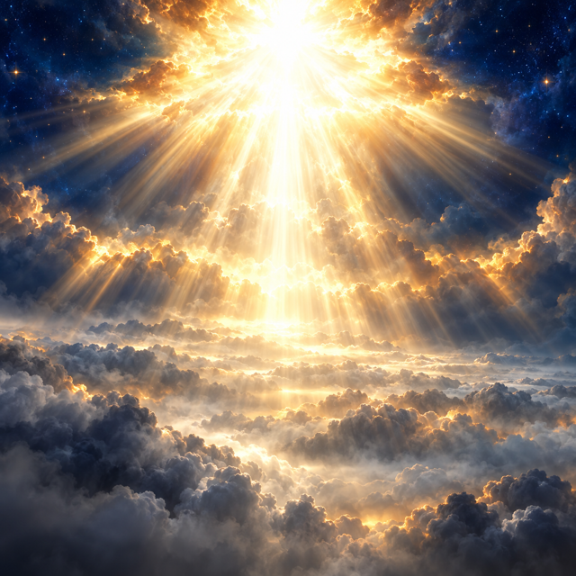
Paintedthe Most High
beingThe Creator and Lord of all hosts who made every angel, dwells above all in the heights of heaven, and is the source of all beatitude.
Looks: Boundless gold-white radiance above every cloud, no form visible—only an overwhelming light whose outstretched hand none can turn aside.
- reigns over Heaven
- created perfect and set on the holy mountain Lucifer
- cast out from the holy mountain and from heaven the Great Dragon
- Lucifer desired to be like by his own power this
Facts and source words
- Creator and Lord of hosts who makes all angels and sets each in his place
- Dwells above the clouds in the heights of heaven; source of all beatitude
- His hand is stretched out and none can turn it away
- Foreknew from eternity which angels would fall and which would stand
“I will be like the most High.” (S1)
“The Lord of hosts hath decreed, and who can disannul it? and his hand is stretched out: and who shall turn it away?” (S1)
“Thus saith the Lord God” (S2)
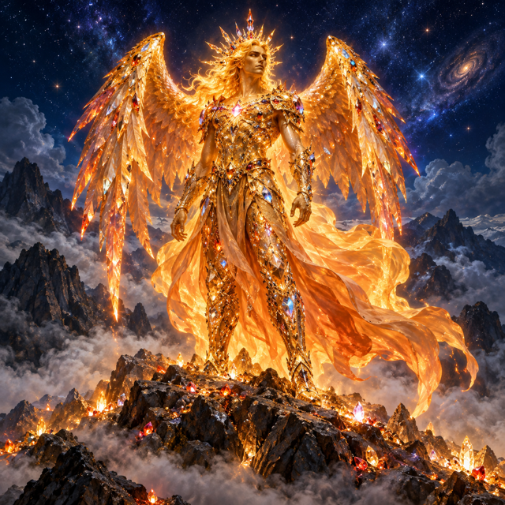
PaintedLucifer
beingThe highest and most beautiful angel at the moment of his creation—the day star, full of wisdom and perfect in beauty, set by God upon the holy mountain.
Looks: A figure of blazing brilliance, every surface covered in flashing precious gems, standing upon a mountain peak amid sparkling stones of fire.
- walked in glory upon The Holy Mountain
- was highest in nature among The Faithful Angels
- desired to be like by his own power the Most High
- the Most High created perfect and set on the holy mountain this
- Precious Stones clothed and covered at creation this
- Paradise of God was the first dwelling of before the fall this
- Iniquity was found in at the second instant this
Facts and source words
- The brightest angel, called the day star; seal of resemblance to God, full of wisdom and perfect in beauty
- A cherub stretched out and protecting, set by God on the holy mountain
- Clad at creation in every precious stone; perfect in his ways from the day of his making
- Desired to be like the Most High by his own natural power and sinned at the first instant after creation
“How art thou fallen from heaven, O Lucifer, who didst rise in the morning?” (S1)
“Thou wast the seal of resemblance, full of wisdom, and perfect in beauty.” (S2)
“Without doubt the angel sinned by seeking to be as God.” (S4)
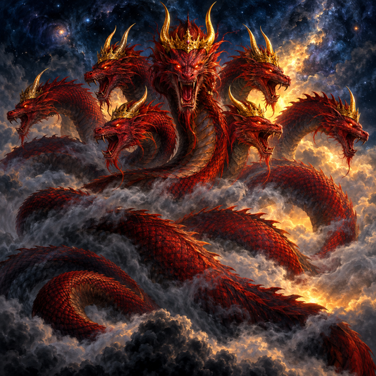
Paintedthe Great Dragon
beingLucifer after his fall—the great red dragon with seven crowned heads and ten horns, prince of the fallen angels, cast down to the earth in fury.
Looks: A vast red serpent with seven crowned heads and ten horns, shrouded in dark shadow, coiling with cold and implacable fury.
- stands upon in rage at the close Sand of the Sea
- the Most High cast out from the holy mountain and from heaven this
- Great Wrath fills after the casting down this
Facts and source words
- Lucifer after the fall: the great red dragon with seven heads and ten horns and seven diadems
- Called the devil and Satan; that old serpent who seduces the whole world
- Prince and lord of the fallen angels, who are all his subjects
- Cast to the earth with great wrath, knowing his time is short
“that great dragon was cast out, that old serpent, who is called the devil and Satan, who seduceth the whole world” (S3)
“and behold a great red dragon, having seven heads, and ten horns: and on his heads seven diadems” (S3)
“having great wrath, knowing that he hath but a short time” (S3)
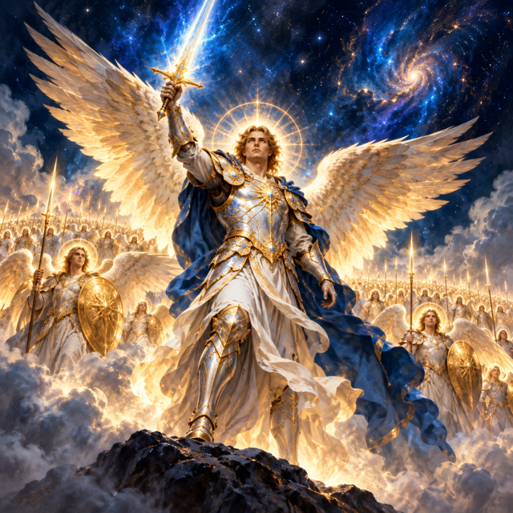
PaintedMichael
beingThe archangel whose name became the war-cry of heaven, who commanded the faithful host and drove the dragon from his place.
Looks: A warrior of blazing blue-white light in full armour, sword raised high, standing at the head of an ordered angelic host.
- led in battle against the dragon The Faithful Angels
Facts and source words
- Archangel; commander of the faithful angels in the battle in heaven
- His name was the war-cry of the good angels against the dragon and his host
- Led the host that prevailed; drove the dragon from his place in heaven
“Michael and his angels fought with the dragon, and the dragon fought and his angels:” (S3)
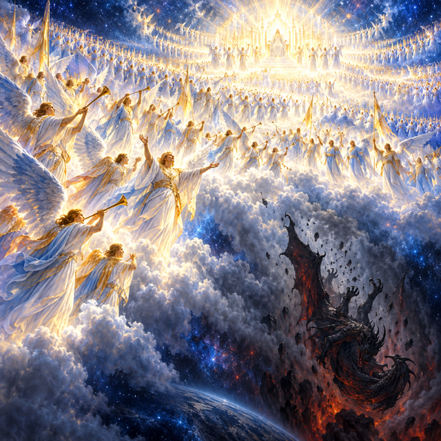
PaintedThe Faithful Angels
beingThe greater part of the angelic host who turned to God in their second act, fought with Michael, prevailed, and were confirmed in good.
Looks: An innumerable company of radiant figures in blue-white light, arrayed in ordered ranks, rejoicing after the dragon is cast out.
Facts and source words
- The greater part of the angelic host; more in number than those who fell
- Turned to God in their second act and were confirmed in good
- Fought with Michael and prevailed; rejoice in heaven after the dragon is cast out
“More angels stood firm than sinned.” (S4)
“Therefore rejoice, O heavens, and you that dwell therein.” (S3)
“they were all of them good in the first instant; but in the second the good were set apart from” (S4)
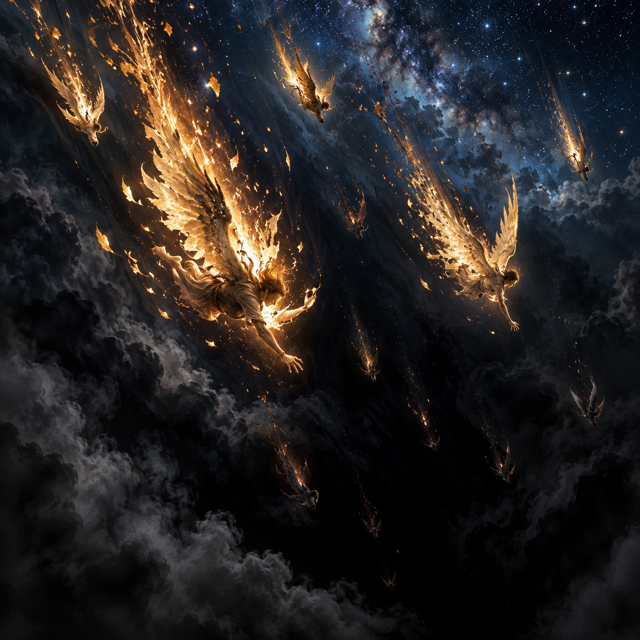
PaintedThe Fallen Angels
beingThe third of the angelic host swept after the dragon by his exhortation in the same instant, cast to the earth with him.
Looks: Stars torn from the sky and tumbling headlong into blackness, their light extinguished as they fall.
- The One Thought drew after it in the same instant this
Facts and source words
- A third of the stars of heaven swept down by the dragon's tail
- Induced to sin by the highest angel's exhortation in the same instant, not compelled
- Thrown to the earth with the dragon; eternally his subjects
“his tail drew the third part of the stars of heaven, and cast them to the earth” (S3)
“his angels were thrown down with him.” (S3)
“the sin of the highest angel was the cause of the others sinning; not as compelling them, but as inducing them by a kind of exhortation” (S4)
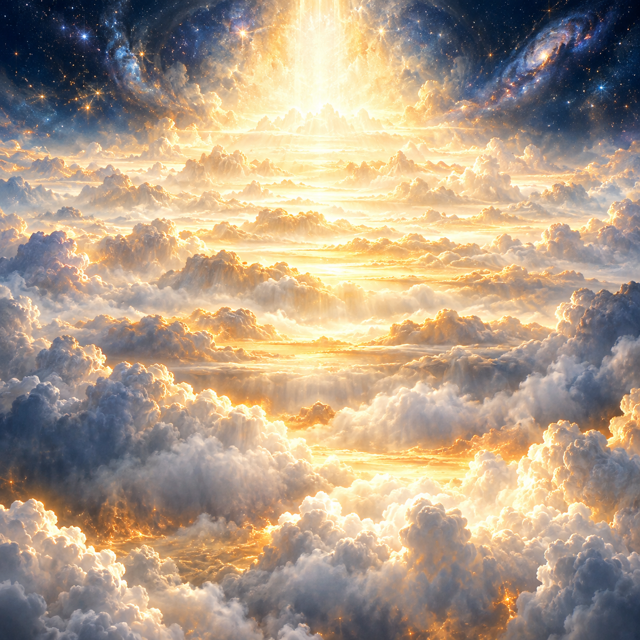
PaintedHeaven
realmThe highest realm, dwelling of God and the entire angelic host before the fall, and the site of the great battle.
Looks: An endless expanse of golden-white light and cloud above all worlds, boundless and immeasurable.
- lies infinitely above The Earth
- the Most High reigns over this
Facts and source words
- The highest realm; dwelling of God and the entire angelic host before the fall
- Site of the great battle between Michael and the dragon
- No longer a place for the dragon and his angels after the war
“And there was a great battle in heaven” (S3)
“neither was their place found any more in heaven.” (S3)
“I will ascend into heaven” (S1)
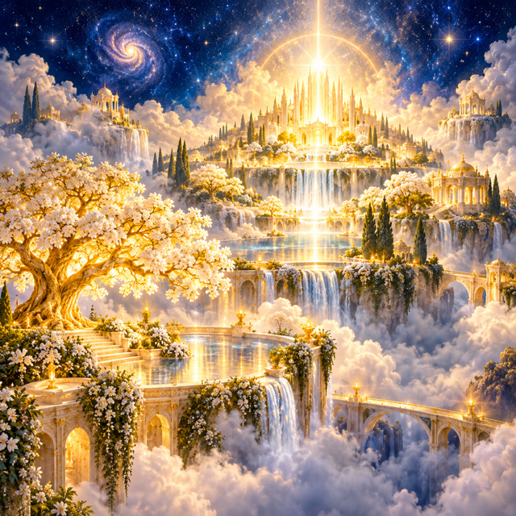
PaintedParadise of God
realmThe garden of God's own pleasures within heaven, the covering cherub's first dwelling and the highest domain of creaturely delight.
Looks: A luminous garden of white-gold light within the heights of heaven, overflowing with beauty and beatitude.
- was the first dwelling of before the fall Lucifer
Facts and source words
- The pleasures of God's own garden; the cherub's original dwelling
- The highest domain of creaturely delight, within heaven
“Thou wast in the pleasures of the paradise of God” (S2)
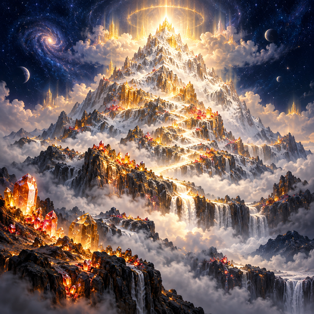
PaintedThe Holy Mountain
realmThe mountain of God where the covering cherub was set to walk among the stones of fire—the seat Lucifer coveted and from which he was expelled.
Looks: A grey-white summit rising within the heavenly realm, its slopes glittering with fiery precious stones, still and majestic.
- Lucifer walked in glory upon this
Facts and source words
- The mountain of God where the covering cherub was set to walk and protect
- Called the mountain of the covenant, in the sides of the north; the seat Lucifer coveted
- Ringed by the stones of fire; the locus of the cherub's original perfection and his expulsion
“I set thee in the holy mountain of God, thou hast walked in the midst of the stones of fire.” (S2)
“I will sit in the mountain of the covenant, in the sides of the north.” (S1)
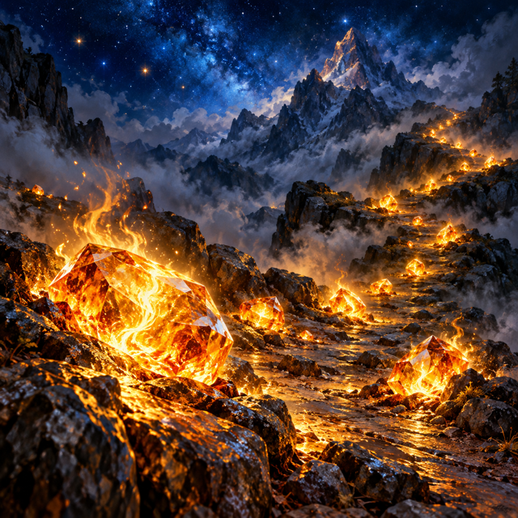
PaintedStones of Fire
objectThe bright precious stones on the holy mountain that sparkle like fire, through which the covering cherub walked in his original glory.
Looks: Gemstones scattered across a mountain path that blaze and flash with living golden fire.
Facts and source words
- Bright and precious stones that sparkle like fire on the holy mountain
- The fiery environment through which the covering cherub walked in his glory
- From among them the cherub was cast out at his fall
“thou hast walked in the midst of the stones of fire.” (S2)
“destroyed thee, O covering cherub, out of the midst of the stones of fire.” (S2)
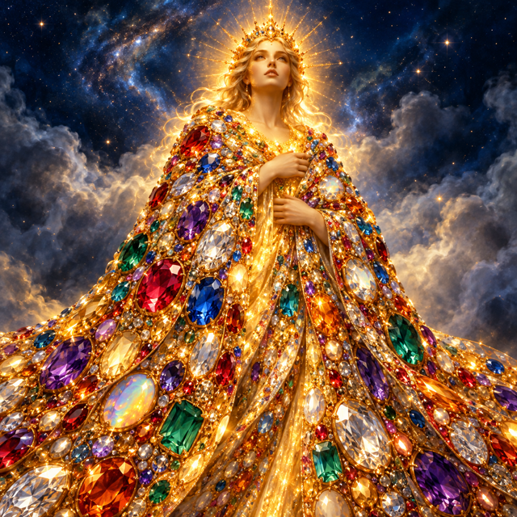
PaintedPrecious Stones
objectEvery precious stone that clothed and covered Lucifer at creation—a mark of given glory, not earned.
Looks: A shimmering mantle of every jewel blazing with reflected gold light, wrapped close around a shining form.
- clothed and covered at creation Lucifer
Facts and source words
- Every precious stone was the covering of the cherub on the day of his creation
- Mark of original glory and proximity to God; given, not earned
“every precious stone was thy covering: the sardius, the topaz, and the jasper, the chrysolite, and the onyx, and the beryl, the sapphire, and the carbuncle, and the emerald: gold the work of thy beauty: and thy pipes were prepared in the day that thou wast created.” (S2)
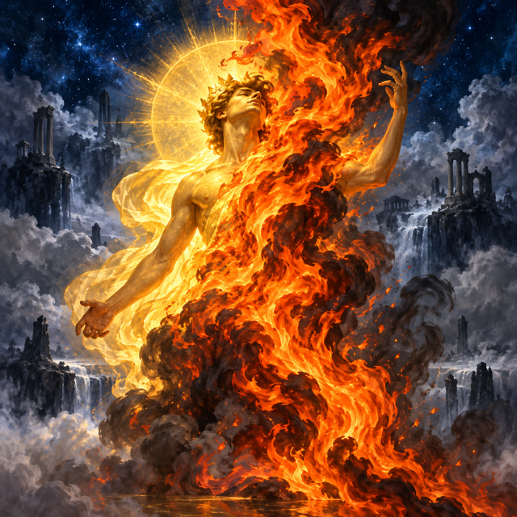
PaintedPride
stateThe root sin of Lucifer—the heart lifted up over its own beauty until wisdom is corrupted and the will turns from God.
Looks: An orange flame climbing upward, consuming and obscuring the clear gold light it rose within.
Facts and source words
- The root sin; the heart lifted up with its own beauty until wisdom is lost
- The one spiritual sin proper to pure intellects, from which all other sins of demons derive
- Greatest in the highest angel because his nature was greatest
“thy heart was lifted up with thy beauty: thou hast lost thy wisdom in thy beauty” (S2)
“Thy pride is brought down to hell, thy carcass is fallen down: under thee shall the moth be strewed, and worms shall be thy covering.” (S1)
“pride and envy are the only spiritual sins which can be found in demons” (S4)
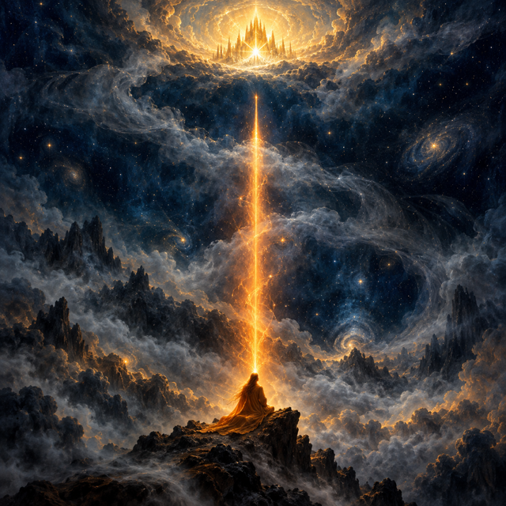
PaintedThe One Thought
stateThe single act of will in which Lucifer chose to seek beatitude as a last end by his own natural power rather than receive it as a gift from God.
Looks: An orange ray aimed upward toward unreachable gold, falling just short of the highest light.
- drew after it in the same instant The Fallen Angels
Facts and source words
- The single act of will formed in the second instant after creation, not the first
- Desire to attain beatitude as a last end by his own natural power, not received from God
- Not desire for equality with God, which he knew was impossible, but for self-sufficient likeness
“And thou saidst in thy heart: I will ascend into heaven, I will exalt my throne above the stars of God, I will sit in the mountain of the covenant, in the sides of the north.” (S1)
“I will ascend above the height of the clouds, I will be like the most High.” (S1)
“he desired resemblance with God in this respect—by desiring, as his last end of beatitude, something which he could attain by the virtue” (S4)
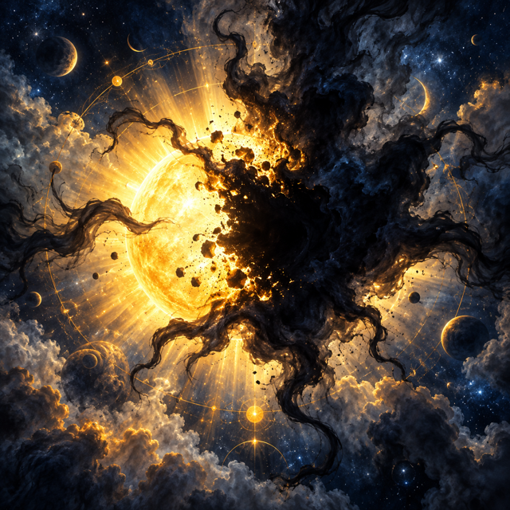
PaintedIniquity
stateThe stain found in the covering cherub at the second instant—the end of his perfection and the barrier that destroyed all preceding merit.
Looks: A spreading dark blot opening within brilliant light, silently swallowing what was perfect.
- was found in at the second instant Lucifer
Facts and source words
- What was found in the covering cherub; the point at which his perfection ended
- The barrier placed against beatitude that destroyed all preceding merit
“Thou wast perfect in thy ways from the day of thy creation, until iniquity was found in thee.” (S2)
“some of them at once placed an impediment to their beatitude, thereby destroying their preceding merit” (S4)
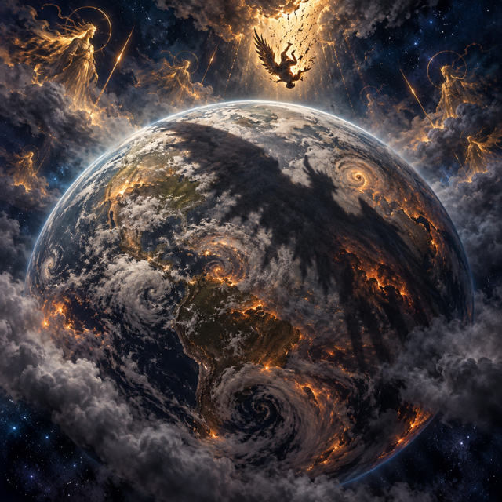
PaintedThe Earth
realmThe realm below heaven to which the dragon and his angels are hurled—the domain of woe and the field of his war against humanity.
Looks: A grey-brown world beneath a heavy sky, marked by the shadow of what fell upon it from above.
Facts and source words
- The realm to which the dragon and his angels are hurled after the war
- The domain of woe after the fall; the dragon comes down to it with great wrath
- Where the dragon makes war against those who keep the commandments of God
“he was cast unto the earth, and his angels were thrown down with him.” (S3)
“Woe to the earth, and to the sea, because the devil is come down unto you, having great wrath, knowing that he hath but a short time.” (S3)
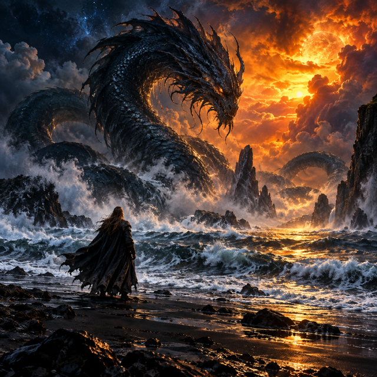
PaintedSand of the Sea
realmThe boundary between sea and land where the dragon stands at the end, full of great wrath, poised to make war against the seed of the woman.
Looks: A dark storm-lashed shoreline under an orange sky, a vast coiling shadow looming at the edge of churning waves.
- the Great Dragon stands upon in rage at the close this
Facts and source words
- The boundary between the sea and the land where the dragon stands at the end
- His final station of rage, poised to make war against the seed of the woman
“And he stood upon the sand of the sea.” (S3)
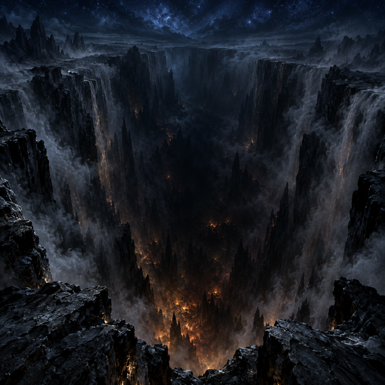
PaintedThe Pit
realmThe abyss below all—the depth to which pride is brought down, the final destination prepared for the devil and his angels.
Looks: An absolute void of darkness below the earth, lit only by the faint glow of decay, from which no ascent is possible.
- The Earth lies above this
Facts and source words
- Hell; the abyss; the depth below the earth to which Lucifer's pride is brought down
- Where worms and the moth are the only covering of the fallen
- The final destination prepared for the devil and his angels
“thou shalt be brought down to hell, into the depth of the pit.” (S1)
“Thy pride is brought down to hell, thy carcass is fallen down: under thee shall the moth be strewed, and worms shall be thy covering.” (S1)
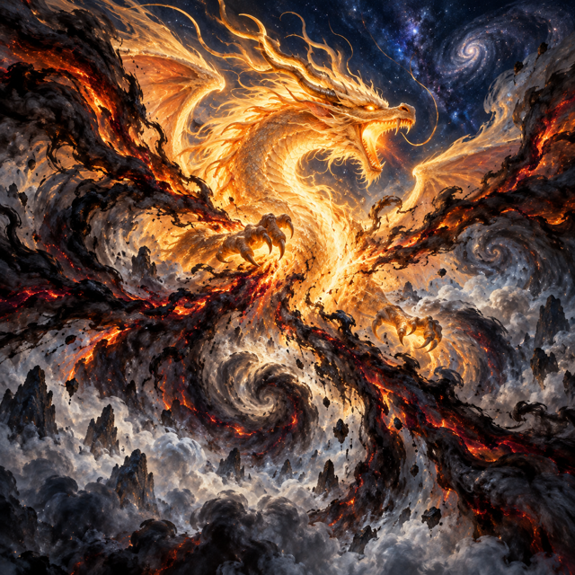
PaintedGreat Wrath
stateThe fury that fills the dragon after being cast to the earth, a rage driven by knowing his time is short.
Looks: A dark burning force radiating outward from the dragon, lashing and storming in all directions.
- fills after the casting down the Great Dragon
Facts and source words
- The fury of the dragon after being cast to the earth
- Rage that comes from knowing his time is short
“having great wrath, knowing that he hath but a short time” (S3)
Map of how the terms link (15 links)
3 items were left out because their source words did not match: lifted up the heart of and destroyed; rules over as prince and lord; Lucifer's heart is lifted up with his own beauty and wisdom turns to pride